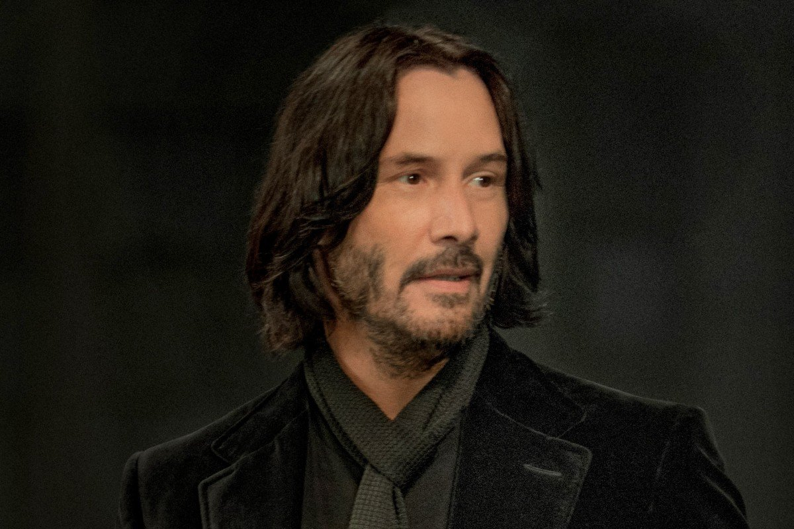

ALLWAYS
John Wick
CEO of Allways
Amazon forest fires:
The 2019 Amazon rainforest wildfires season saw a year-to-year surge in fires occurring in the Amazon rainforest and Amazon biome within Brazil, Bolivia, Paraguay, and Peru during that year's Amazonian tropical dry season.[5] Fires normally occur around the dry season as slash-and-burn methods are used to clear the forest to make way for agriculture, livestock, logging, and mining, leading to deforestation of the Amazon rainforest. Such activity is generally illegal within these nations, but enforcement of environmental protection can be lax. The increased rates of fire counts in 2019 led to international concern about the fate of the Amazon rainforest, which is the world's largest carbon dioxide sink and plays a significant role in global climate change.
Brazilian journalist Silio Boccanera argues that some fires at this time of year - the dry season in Brazil - are to be expected. But many of the fires burning through the Amazon are believed to have been started deliberately.
This is a fair point. On 20 August, Brazil's satellite agency said there had been an 84% increase in the number of fires compared with the same period in 2018. It's the highest number.
President Bolsonaro is coming under growing political pressure to end the burning of the Amazon - France's President Emmanuel Macron even threatened to scrap a huge trade deal between the European Union and South America as a result.As Lucy suggests, there is a case to be made that some.
As Lucy suggests, there is a case to be made that some fire-adapted forests benefit from fires - they can help clear the forest and allow trees space to grow stronger. President Bolsonaro is coming under growing political President Bolsonaro is coming under growing political